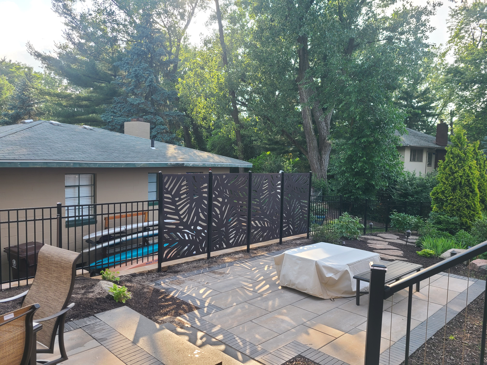

A retaining wall is one of those projects homeowners put off until they can't anymore. The slope has been washing out for years. The fence posts keep leaning. The backyard floods after every storm. At some point the property tells you the problem isn't going away — it's getting worse.
By the time most people call, what could have been a straightforward wall has become a larger excavation job because years of erosion have undercut the surrounding grade. Acting earlier is almost always cheaper and simpler.
Here are the five clearest signs that a retaining wall is what your property actually needs — and what you should understand about building one correctly.
Sign 1: Soil Eroding After Rain
If you regularly see dirt washing from a slope onto your lawn, driveway, patio, or toward your foundation after rain, that's the ground telling you the grade isn't stable. Mild surface erosion can sometimes be addressed with ground cover or grading. But if you're losing meaningful topsoil after every storm, and the slope is steeper than about 3:1 (three feet horizontal for every one foot vertical), a retaining wall is the structural solution.
Left unaddressed, erosion exposes root systems, undermines fence posts, and eventually reaches foundation footings and basement walls. The cost of structural foundation repair dwarfs the cost of a retaining wall installed proactively.
Sign 2: Your Slope Is Too Steep to Use
This is the most common scenario we see on residential properties in the region. The yard has a drop — sometimes just 3–4 feet across a 10-foot run — that makes the space functionally useless. You can't mow it safely, you can't set furniture on it, and you certainly can't build anything on it.
A retaining wall (or a series of terraced walls) converts that dead slope into flat, usable outdoor living space. It's not just a structural fix — it's a significant quality-of-life improvement and a meaningful property value add. A patio, garden bed, or lawn level with your back door is genuinely useful. A 30-degree slope is not.
Sign 3: Water Pools at the Base of a Hill
Standing water that collects at the base of a slope after rain and drains slowly — or not at all — indicates a drainage problem related to grade. The slope is channeling surface water to a low point that has nowhere to go.
A retaining wall alone doesn't solve drainage — but it's part of the solution. Any properly built retaining wall includes drainage provisions: crushed stone backfill behind the wall, filter fabric to prevent soil infiltration, and weep holes or perforated pipe at the base to move water away from the wall and off your property.
If you skip drainage in a retaining wall build, hydrostatic pressure builds behind the wall over time and eventually causes it to buckle or lean outward. A correctly built wall anticipates water management from day one.
Not sure if your yard needs a retaining wall or a grading solution?
Schedule a Free On-Site AssessmentSign 4: An Existing Wall Is Leaning, Cracking, or Bulging
An existing retaining wall that's visibly failing is a red flag — not a cosmetic issue. Walls lean and bulge because of one or more of the following: inadequate drainage creating hydrostatic pressure, insufficient footing depth, improper batter (the wall wasn't built with a backward lean to resist soil pressure), or the original wall was undersized for the soil load it's holding.
Once a wall starts to lean significantly, repair options are limited. You can add tiebacks to anchor an existing wall back into the slope, but in most cases a failing wall needs to be torn out, the drainage addressed, and a properly engineered replacement installed. Patching around a failing wall structure rarely solves the underlying problem.
If you have an existing wall with visible lean — even a few inches — getting an assessment before it fails completely is significantly cheaper than dealing with a collapsed wall and the erosion damage that follows.
Sign 5: You Want to Build a Patio or Flat Space on a Sloped Yard
This is the proactive version. You have a vision for the yard — a patio, an outdoor dining area, a flat play space for kids — but the grade makes it impossible to build on. A retaining wall is the enabling structure that makes those projects viable.
In this scenario, the retaining wall and the project it enables are often designed together. The wall height and footprint are determined by how much flat space you need and where you need it. This kind of project — a wall plus a deck or patio above it — is one of the highest-value outdoor improvement investments you can make on a property with grade challenges.
Retaining Wall Materials — What's Actually Used
The right material depends on the height of the wall, the aesthetic of the property, and the budget. Here's a practical overview:
- Pressure-treated timber: Cost-effective for walls under 4 feet. Looks natural in landscaped settings. Lifespan of 15–20 years with treated wood. Not ideal for walls over 4 feet due to structural limitations
- Concrete block (segmental retaining wall block): The most common choice for medium-height residential walls (3–8 feet). Products like Allan Block and Versa-Lok interlock without mortar and are engineered for soil retention. Long lifespan, minimal maintenance
- Natural stone: Fieldstone or cut stone creates the most natural and permanent appearance. Labor-intensive to build properly but can last 50+ years. Higher cost than block
- Poured concrete: Used for larger commercial applications and walls where aesthetics aren't the primary concern. Requires forming and significant labor; overkill for most residential projects
What Building a Retaining Wall Actually Involves
This is where the difference between a properly built wall and a wall that fails in five years lives. The visible part of the wall — the face you see — is the easy part. What determines whether the wall holds is what happens below grade:
- Excavation: The slope needs to be cut back to create room for the wall base and the backfill material. This is significant site work — typically done with equipment
- Base preparation: The wall sits on a compacted gravel base, typically 6 inches, to provide even bearing and drainage. This is where walls built by homeowners or unqualified contractors most often fail — they skip the base preparation
- Drainage layer: Crushed stone (not topsoil) is backfilled directly behind the wall to allow water to move down and out. Filter fabric separates the gravel from the native soil
- Weep holes or drain pipe: Water needs somewhere to go. Weep holes at the base of block walls, or perforated drain pipe running behind the wall, discharge water to the side rather than letting it build pressure
- Compaction: Each lift of backfill is compacted before the next layer is added. Uncompacted fill settles, creating voids behind the wall and eventually causing it to shift
- Permits: Walls over a certain height (typically 4 feet in Indiana) require permits in most jurisdictions. Woodland handles permit applications as part of the project
A retaining wall project is more involved than it looks from the outside. When it's done right, you shouldn't have to think about it again for decades. When shortcuts get taken — on the base, the drainage, or the backfill — those savings show up as failure within a few years.
If any of the five signs above match what you're seeing on your property, the next step is a site assessment. Ross will look at the grade, the drainage pattern, and what you're trying to accomplish, and give you a straight recommendation on what type of wall makes sense, what it would cost, and what you can expect from it long-term.